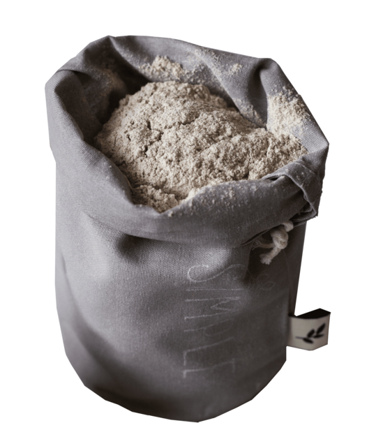
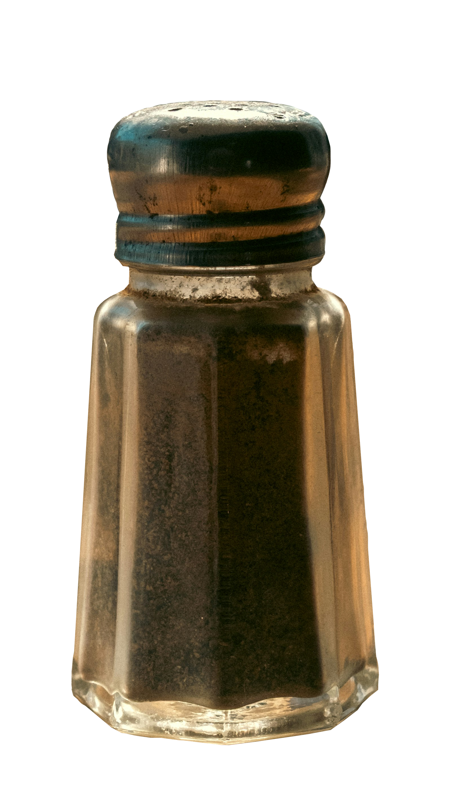

TASTY WAFFLES
Hora de aprender la magia de los maravillosos waffles!

Historia
Las palabras «waffle» y «wafers» (oblea), derivan de la misma palabra del alemán antiguo Wafel, que también se relaciona con palabras que significan «tejido» y «panal de abeja», lo que podría ser el precursor de la cuadrícula en el waffle actual.
La iglesia utilizaba las obleas como hostias. En la Edad Media, los monasterios eran los encargados de hornear las obleas, que después eran consagradas. Eran uno de los pocos alimentos permitidos durante los períodos de ayuno religioso.
Con el tiempo, las panaderías seculares empezaron a producir obleas más grandes y elegantes, con diseños elaborados. Este tipo de obleas todavía están asociadas con celebraciones en Europa, como la celebración de Reyes.
En la época medieval, el wafel alemán se convirtió en el gaufre francés, que con el tiempo derivó en las gaufrette (galletas rellenas). En México se conocen como galletas napolitanas.
La forma de la rejilla asegura la cocción uniforme de la masa. Es muy común añadir ingredientes como chocolate, helado o nata. La técnica de cocinarlo entre placas a 100 °C con presión de vapor constante le da su característico color anaranjado. Se sirve caliente.
La evolución técnica de la wafflera fue el punto de inflexión para su popularidad masiva. A finales del siglo XIX, la introducción de las placas de hierro fundido permitió un control más preciso de la temperatura. En los Estados Unidos, Cornelius Swartwout patentó el primer diseño moderno en 1869, lo que transformó este alimento de un lujo artesanal en un clásico del desayuno familiar. Esta innovación permitió que la masa, compuesta principalmente por harina, huevos y leche, lograra esa textura crunchy por fuera y esponjosa por dentro.
Receta de Waffles Dulces
Ingredientes



Preparación
-
Para la masa de waffles dulces: En un bol vamos a poner la harina integral junto con la harina leudante. Agregamos una cucharadita de sal y también el endulzante o el azúcar dependiendo lo que prefieran usar. Mezclamos incorporando bien todos nuestros polvos.
-
A esto, vamos a agregar un huevo y la mitad de la cantidad total de la leche. También agregamos un chorrito de esencia de vainilla que le dará un sabor especial a estos waffles dulces. Mezclamos hasta que todo esté bien incorporado.
-
Una vez que esté incorporado, vamos a ir incorporando de a chorritos el resto de la leche, mezclando hasta incorporar entre chorrito y chorrito. Sólo nos queda agregar la manteca derretida y una vez que esté bien mezclado todo, lo vamos a llevar a la heladera por media hora para que se hidrate bien la harina y quede bien espesa la mezcla.
-
Pasado este tiempo, vamos a retirar la mezcla de la heladera y vamos a preparar nuestra wafflera (o en su defecto, una sartén al fuego, no quedan con la forma de waffle pero se hacen perfectamente). Vamos a echar rocío vegetal o un pedacito de manteca para que se derrita y luego, encima echamos la mezcla.
-
Cerramos la wafflera y esperamos unos segundos que se cocinen. Si están utilizando sartén, cuestión de hacer vuelta y vuelta. Sólo queda, entonces, sacar los waffles cuando estén hechos y tirarles por encima una rica mermelada.

Receta de Waffles Salados
Ingredientes



Preparación
-
Para la masa para waffles salados: lo primero que vamos a hacer es colocar en un bol la harina leudante, junto con sal y ajo deshidratado. Agregamos pimienta, semillas variadas y perejil picado. Mezclamos.
-
A esta mezcla vamos a agregar 1 huevo y la mitad de la leche. Volvemos a mezclar bien y luego agregar el resto de la leche.
-
También vamos a agregar la manteca derretida y luego batir hasta que quede todo bien unido. Llevamos a la heladera por 30 minutos. Esto es clave para que los waffles salgan perfectos, la masa tiene que estar fría.
-
Preparamos la wafflera con el rocío vegetal o la manteca y pasado el tiempo de reposo, sacamos la mezcla y la colocamos adentro (también pueden usar una sartén, y colocan la mezcla vuelta y vuelta).
-
Una vez cocidos, solo queda retirarlos y degustarlos con lo que más prefieran. Si son aventureros, pueden probar agregando queso cremoso al momento de llevarlos a la cocción para que se derrita adentro!
Nuestra comunidad
- Eren Jaeger
- "Los waffles me dieron la libertad que tanto buscaba. ¡La textura de la masa es simplemente perfecta!"
- Mikasa Ackerman
- "Solo me importa que los waffles estén calientes y bien cocidos. Estos cumplen con creces. Son muy reconfortantes."
- Armin Arlert
- "Científicamente, la proporción de leche y manteca en esta receta es la más equilibrada que he analizado en mis libros."
- Sasha Blouse
- "¡Increíble! Podría comer cien de estos. El aroma que sale de la wafflera es lo mejor que me pasó en la vida."
Opinion personal
“Considero que el waffle es el mejor desayuno que uno podría tener, especialmente si está acompañado con una chocolatada o jugo de naranja. Tiene la estructura perfecta para sostener múltiples aderezos, sea un poco de dulce de leche o miel y ninguna otra masa logra su textura suave. Pero trágicamente, no tengo una wafflera :(.”
“Ahora hago una combinación entre hot cake y waffle, porque lo tengo que hacer desde una sartén. Incluso si no tiene los cuadrados perfectos para sostener toppings, al comer un bocado automáticamente mi día mejora drásticamente. Mi meta para el próximo año es comprarme una wafflera eléctrica de CC para poder ser feliz en las mañanas”